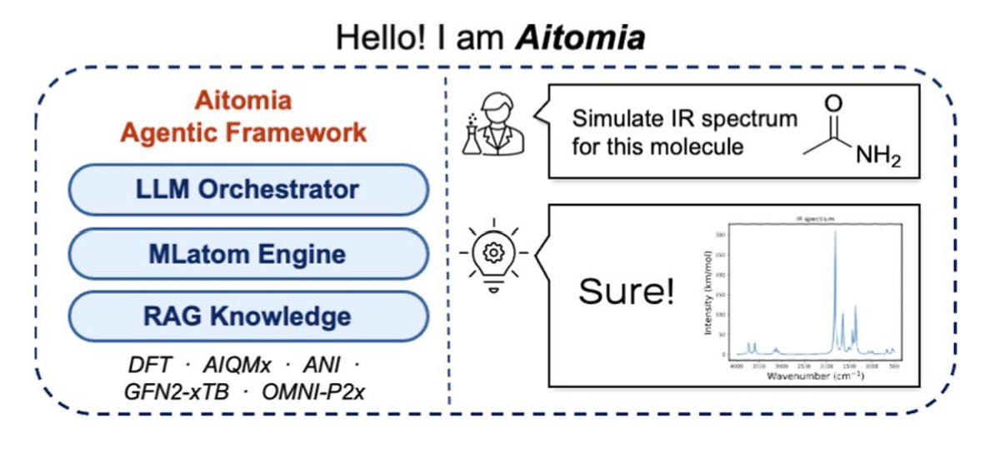

Machine Learning & Artificial Intelligence for Chemical and Material Sciences
I'm a PhD student at the Hong Kong University of Science and Technology (HKUST), advised by Prof. Hanyu Gao, and was previously advised by Prof. Pavlo O. Dral during my Master's at Xiamen University. I'm broadly interested in applying machine learning and data science techniques to problems in chemical and materials engineering — from accelerating molecular simulations to building AI agents that support computational chemistry research. Below is my research experience to date.
Projects
Machine Learning for Copolymer Properties Prediction
Sep 2026 – PresentPhD research at HKUST — advised by Prof. Hanyu Gao
- Developing machine learning models to predict structure–property relationships in copolymers, supporting data-driven and rational polymer design.
- Building data representations and pipelines for copolymer sequences and compositions suitable for machine learning models.
AI-Driven Autonomous Computational Chemistry
Sep 2024 – PresentFunded by a Natural Science Foundation of China (NSFC) grant
- Fine-tuned domain-specific LLMs using LoRA and built RAG-based knowledge systems for enhanced reasoning in computational chemistry.
- Designed an autonomous simulation platform with multi-agent workflows (LangGraph) and agent-to-agent (A2A) communication, integrating FastAPI for web deployment.
- Prepared and curated high-quality datasets for LLM training and optimized local deployment of customized models.
Machine Learning Interatomic Potentials Beyond DFT Accuracy
Dec 2024 – PresentCollaboration with Nicolaus Copernicus University, Toruń, Poland — Ireneusz Grabowski & Szymon Śmiga
- Developed machine learning interatomic potentials aimed at surpassing standard DFT accuracy, covering the full workflow: data preparation, descriptor engineering (AEVs), and model training.
- Performed hyperparameter optimization and designed evaluation strategies such as learning curves and energy–force consistency checks.
Ensemble Learning for More Accurate Predictions
Oct 2024 – Jan 2025- Explored ensemble learning approaches inspired by the idea that "the best DFT functional is the ensemble of functionals," applying similar concepts to chemistry-focused machine learning tasks.
- Designed and evaluated ensemble architectures — including linear regression and its variants — to combine outputs of multiple models trained on the ANI dataset for improved prediction accuracy.
Accurate Heat-of-Formation Calculations Beyond the Harmonic Oscillator Approximation
Jan 2024 – Oct 2024- Investigated methods for improving thermochemical predictions — specifically heats of formation — by incorporating vibrational anharmonicity, and benchmarked multiple computational approaches against standard reference datasets.
Aitomia
Aitomia is an intelligent, AI-driven platform designed to assist researchers in quantum chemistry and atomistic simulation. It integrates large language models, scientific workflows, and machine learning tools — including MLatom and AIQM methods — to streamline computational chemistry research, from input generation to result interpretation.
- LLM-guided workflow orchestration for quantum chemistry calculations
- Integrated AIQM1/2/3 and machine learning interatomic potential methods
- AI-enhanced conformer search via meta-dynamics, benchmarked against CREST
- Designed to lower the barrier between a research question and a converged result
